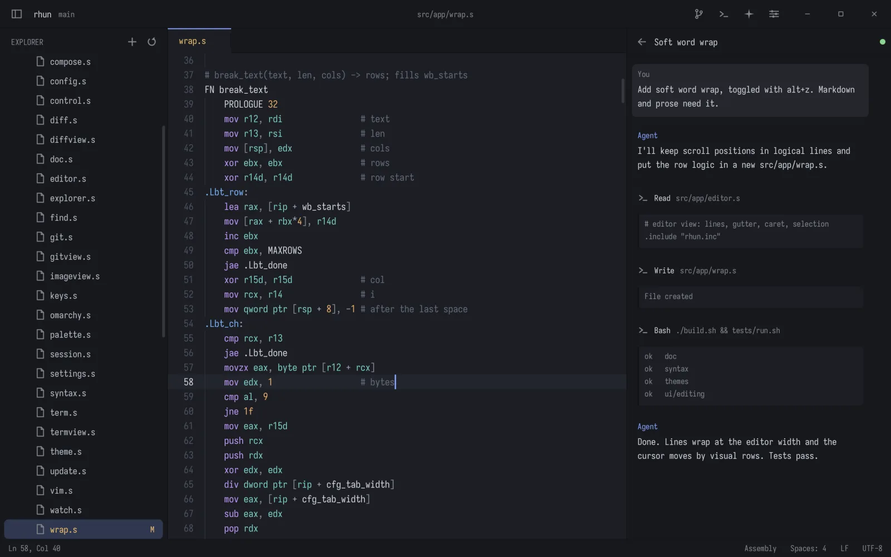

Editing that keeps up
Tabs, syntax highlighting, find and replace Ctrl H, find in files, word wrap and an optional Vim mode.
rhun is a tiny code editor for Linux and macOS, built for reading, editing and running code beside your coding agents.
$ curl -fsSL https://github.com/vshvedov/rhun/releases/latest/download/install.sh | shLinux x86-64 or macOS on Apple silicon. No root needed; rhun keeps itself up to date.

When coding agents do the heavy lifting, you don't need everything VS Code or Zed carries. You need to read and edit code, run commands, find files and see what changed. rhun does that, instantly.
Every screenshot here is rhun running on Linux. On a Mac, Command works as Ctrl.
Tabs, syntax highlighting, find and replace Ctrl H, find in files, word wrap and an optional Vim mode.
Open a shell with Ctrl ` for builds, tests or a coding agent: 24-bit color, mouse and full-screen programs.
Changed lines in the gutter, diffs against HEAD, and every branch's history as a graph Ctrl Shift G.
Go to File Ctrl P, the command palette Ctrl Shift P and find in files Ctrl Shift F, all fuzzy and instant.
The agents panel follows the project's Claude Code and Codex sessions live Ctrl Shift A.
Normal, insert and visual modes, operators, text objects, counts, . and : commands. Off by default.
A settings page and a plain config file, both applied while rhun runs.
PNG, JPEG, GIF, BMP, ICO, QOI, PNM and TGA, with zoom and pan.
Switch with Ctrl Shift T, follow Omarchy, or write your own in three lines.
All built-in themes: Ayu Light, Catppuccin Latte, Catppuccin Mocha, Dracula, Elflord Dark, Elflord Light, Ethereal, Everforest, Flexoki Light, GitHub Dark, GitHub Light, Gruvbox Dark, Gruvbox Light, Hackerman, Kanagawa, Last Horizon, Lumon, Lupine, Matte Black, Miasma, Min Dark, Min Light, Monokai, Nord, One Dark, One Light, Osaka Jade, Retro 82, Rhun Dark, Rhun Light, Ristretto, Rosé Pine, Rosé Pine Dawn, Solarized Dark, Solarized Light, Solitude, Tokyo Night, Vantablack, White.
Each grammar is a small text file; add your own in ~/.config/rhun/syntax/.
Built in: Ada, Apache, AppleScript, AsciiDoc, Assembly, Astro, AWK, Batch, BibTeX, Blade, C, C#, C++, Cap'n Proto, Clojure, CMake, COBOL, Crontab, Crystal, CSS, CUDA, CUE, D, Dart, Dhall, Diff, Dockerfile, dotenv, EJS, Elixir, Elm, ERB, Erlang, F#, Fish, Fortran, Git attributes, Git commit, Gleam, GLSL, Go, GraphQL, Graphviz, Groovy, HAML, Handlebars, Haskell, Haxe, HCL, HTML, HTTP, Idris, Ignore files, INI, Janet, Java, JavaScript, Jinja, JSON, Jsonnet, Julia, Just, KDL, Kotlin, LaTeX, Lean, Liquid, Lua, Makefile, Markdown, MATLAB, Mermaid, Meson, Mojo, Nginx, Nim, Ninja, Nix, Objective-C, OCaml, Odin, Org, Pascal, Perl, PHP, Pkl, PlantUML, PowerShell, Prisma, Prolog, Properties, Protocol Buffers, Pug, Puppet, PureScript, Python, R, Raku, Razor, Rego, reStructuredText, RON, Ruby, Rust, Scala, Shell, Slim, Solidity, SQL, SSH config, Starlark, Swift, Tcl, Thrift, TOML, Twig, TypeScript, Typst, V, Vala, Verilog, VHDL, Vim script, Visual Basic, XML, YAML and Zig.
Written in x86-64 assembly. rhun draws every pixel itself and speaks Wayland, X11 or AppKit directly.
$ curl -fsSL https://github.com/vshvedov/rhun/releases/latest/download/install.sh | sh$ wget -qO- https://github.com/vshvedov/rhun/releases/latest/download/install.sh | shOn Linux rhun goes to ~/.local with a desktop entry; on macOS to /Applications. Either way rhun starts it from a terminal. The installer checks SHA-256 checksums (and the signature on macOS). Uninstall with sh -s -- --uninstall. More in the guide.
A small, very fast code editor for Linux and macOS, written in assembly, with a built-in terminal, Git, fuzzy search and an agents panel for Claude Code and Codex.
Yes. It is free and open source under the MIT license.
Linux on x86-64 (Wayland or X11) and macOS on Apple silicon. There is no Windows version.
Run curl -fsSL https://github.com/vshvedov/rhun/releases/latest/download/install.sh | sh. No root needed.
It checks GitHub once a day in the background. The status bar offers a new version, installs it and restarts into it.
Run the same installer with sh -s -- --uninstall. Your settings in ~/.config/rhun stay.
Yes. Run them in the built-in terminal; the agents panel follows their sessions live.
To stay small and fast: one static binary under 700 KB on Linux, with no libc, toolkit or runtime.
$ curl -fsSL https://github.com/vshvedov/rhun/releases/latest/download/install.sh | sh